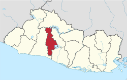
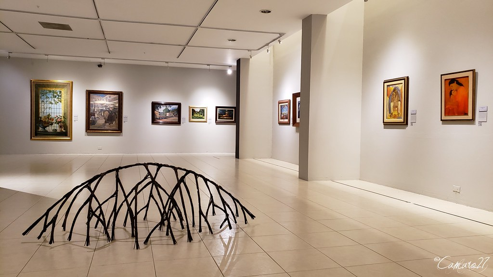
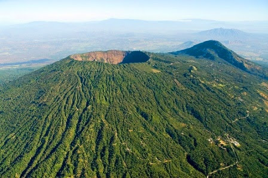

Datos históricos importantes
Su fundación, se realizó el día 25 de diciembre del año 1889 por la familia de Miguel Molaro
Aurora Saint Sauver, apellido éste de origen francés que quiere decir San Salvador.
Lista de los municipios
- San Salvador
- Aguilares
- Apopa
- Ayutuxtepeque
- Ciudad Delgado
- Cuscatancingo
- El Paisnal
- Guazapa
- Ilopango
- Mejicanos
- Nejapa
- Panchimalco
- Rosario de Mora
- San Marcos
- San Martín
- Santiago Texacuangos
- Santo Tomás
- Soyapango
- Tonacatepeque
Centros turísticos importantes
- La puerta de el diablo
- Museo de arte de El Salvador
- Museo de la Palabra y la Imagen
- Monumento al Divino Salvador del Mundo
- Plaza Futura

Lagos
- Lago de ilopango
Volcanes o cerros
- Volcan de San Salvador

Personajes célebres
- José M. Delgado
- Vicente Aguilar
- Manuel Aguilar
- Jorge Lardé, Pedro P. Castillo